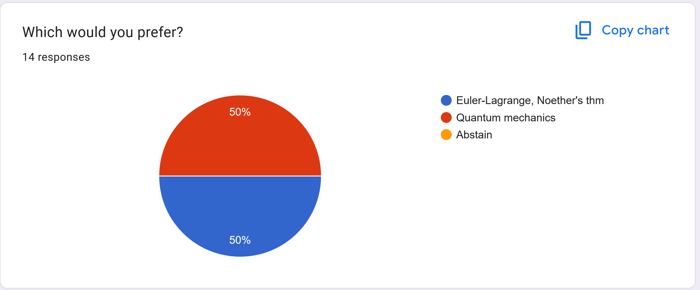
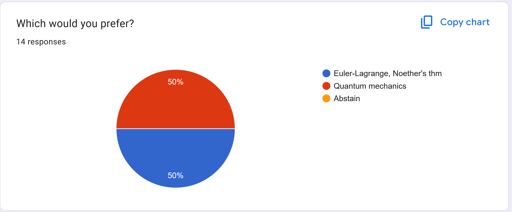
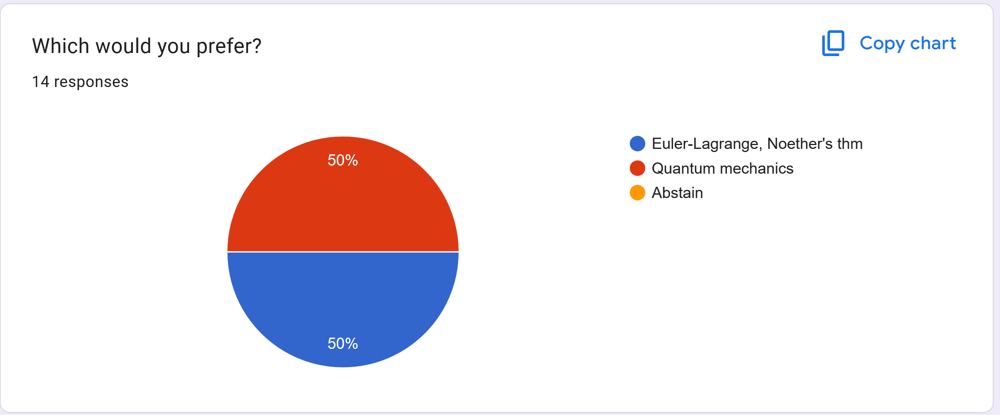

(You are not expected to actually do anything with this information. This is just here if you want it.)
(I will try to keep this updated, assuming I manage to make plans before the day we meet.)

Okay so, the votes here are incredibly close. I am strongly partial towards doing Euler-Lagrange. I love this topic and think it will be significantly easier to relate to the material of the class we've covered this semester, and (perhaps more importantly) I genuinely can't remember how my first exposure to quantum mechanics went and so I'd have to do some research on how people approach this. I've tried digging around and ultimately I think trying to put something together that I feel comfortable showing to complete beginners is going to take a lot more preparation than the very shiny alternative here.
So, I'm going to go with Euler-Lagrange. I'm sorry to all the quantum enjoyers out there! Thanks for bearing with me. Hope to see you there! -Peri